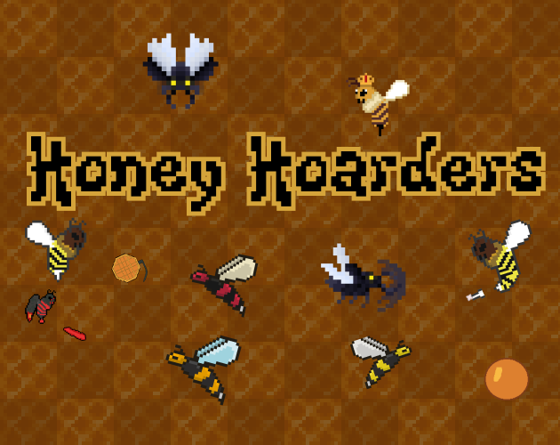
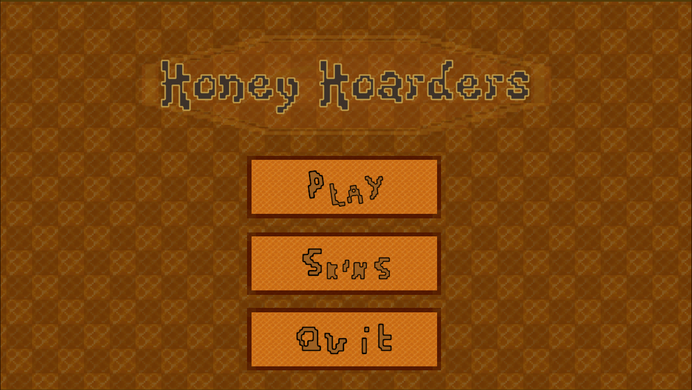
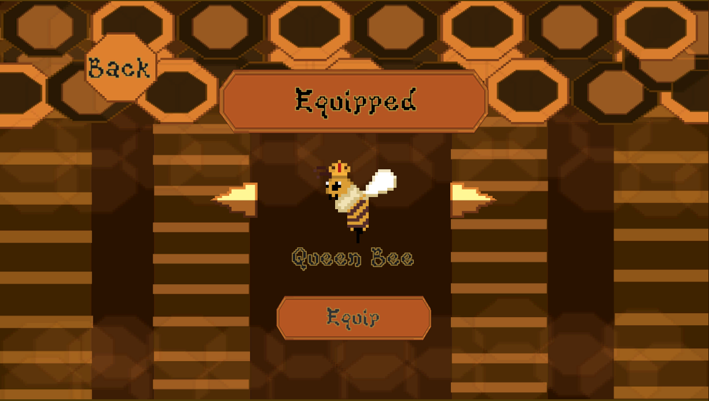
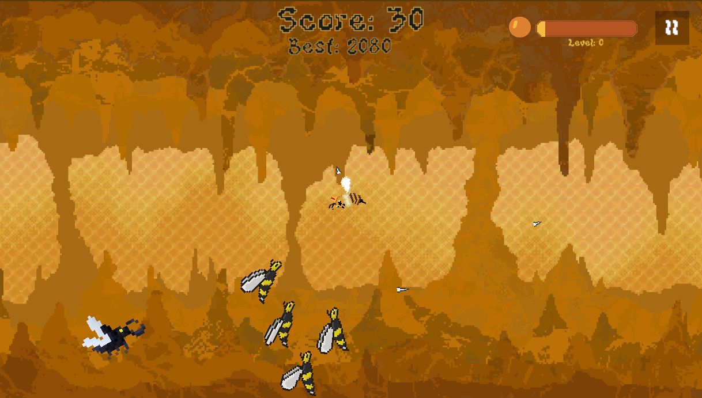
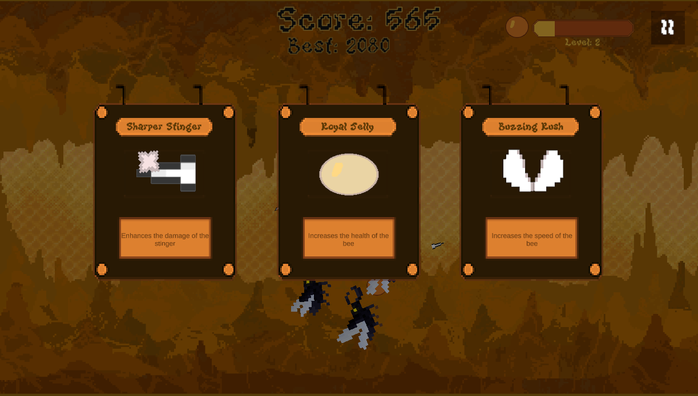

// Featured Project
A fast paced survival game about pushing your luck in waves of enemies, where killing bee predators earns honey used to upgrade your chances of surviving longer each run.

Project 01
Honey Hoarders is a fast paced survival game where you fight off waves of bee predators, collect honey from defeated enemies, and use it to upgrade your chances of surviving longer each run. Each wave gets more intense as you push your luck further. The goal is simple: survive as long as you can before the swarm overwhelms you.
Overview
Honey Hoarders is a fast paced wave survival game where the player fights off increasingly dangerous bee predators, collects honey from defeated enemies, and uses it to upgrade abilities between waves. In the first 30 seconds, the player is immediately placed into combat and quickly understands that survival depends on how well they balance risk, movement, and upgrades.
The game sits in the wave survival genre and is inspired by games like Vampire Survivors and 20 Minutes Till Dawn. It focuses on short intense runs that escalate quickly into chaotic survival situations. I wanted to build a simple but high pressure loop where every decision — whether to upgrade now or push further — directly affects how long you survive.
5
Playtesters
10
Weeks of dev
3
Iterations
The Challenge
The central design problem was how to build a fast paced survival experience that stays tense and engaging in short runs, while still giving the player meaningful progression through upgrades earned during gameplay rather than passive rewards.
Instead of focusing on story or complex systems, I needed to make a simple loop feel consistently interesting through pacing, enemy pressure, and risk versus reward decisions under time pressure.
Design question: How do we make a wave survival game where collecting resources and upgrading always feels like a meaningful risk under pressure rather than a repetitive action?
The main constraints were a small scope, limited development time, and working in a two person team. This meant we had to focus on one strong core loop rather than multiple systems, and ensure everything could be iterated and balanced quickly within the engine without overcomplicating the design.
Design Process
We prototyped the core loop first by implementing movement, enemy spawning, and honey drops to validate the risk–reward system before adding any additional features. Keeping early builds simple allowed us to iterate quickly on pacing and overall game feel.
In the first version, enemies moved directly toward the player in a predictable pattern, which reduced tension and made encounters feel repetitive. We adjusted this by introducing variation in movement behavior and pacing, which made waves less predictable and increased pressure during survival moments.
Playtesting showed that players understood the core loop but didn’t always feel strong progression between waves. In response, we adjusted the timing and impact of upgrades so each run felt like a clearer escalation rather than flat difficulty.
Key decision: We chose to tie honey directly to combat rewards rather than passive collection, forcing players to engage with danger in order to progress and reinforcing the core risk–reward loop.
Screenshots




// Caption: These screenshots aim to show the level, the mechanics, the level up and health system, and the enemies.
Lessons Learned
Honest reflection improved this project over time. I learned that small changes to pacing and feedback can significantly affect how tense or repetitive a survival loop feels, even when the core mechanics stay the same.